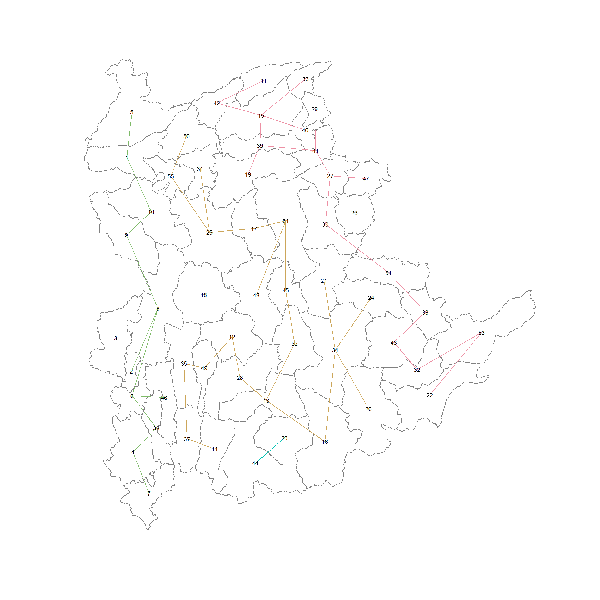
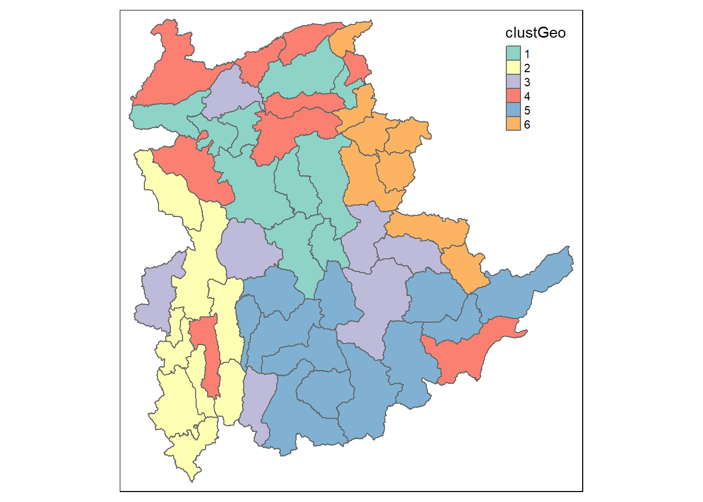
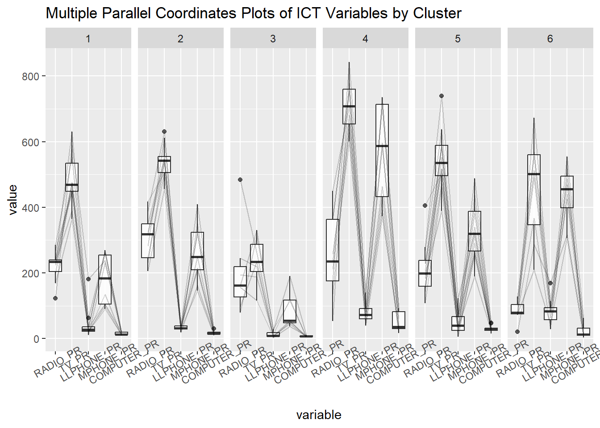

pacman::p_load(spdep, sp, tmap, sf, ClustGeo,
cluster, factoextra, NbClust,
tidyverse, GGally)09 In-class Exercise (Review)
0.1 The Code
shan_sf <- read_rds("data/rds/shan_sf.rds")
shan_ict <- read_rds("data/rds/shan_ict.rds")
shan_sf_cluster <- read_rds("data/rds/shan_sf_cluster.rds")0.2 Conventional Hierarchical Clustering
Take note that this is a simplified version of hierarchical clustering.
We need to first define a proximity matrix.
- use base R dist() function to calculate numerical distance between all variables in
shan_ICT. Note that if your input contains unnecessary variables, you need to filter them out.- When creating an App, we will usually allow users to specify the variables, and choose the method to be used; refer to dist() function documentation for more information.
- use Ward’s method for hierarchical clustering to cluster using proximity matrix – outputs a unique hclust object
- Group the results – note that this works together with the hclust() function – on the hclust object
- Use print(groups) to check your output, in terminal or in the code chunks.
proxmat <- dist(shan_ict, method = "euclidean") # calculate numerical distance
hclust_ward <- hclust(proxmat, method = "ward.D") # using Ward's method
groups <- as.factor(cutree(hclust_ward, k=6)) #print(groups) Mongmit Pindaya Ywangan Pinlaung Mabein Kalaw Pekon
1 1 2 1 3 3 1
Lawksawk Nawnghkio Kyaukme Muse Laihka Mongnai Mawkmai
3 3 3 4 1 1 5
Kutkai Mongton Mongyai Mongkaing Lashio Mongpan Matman
1 1 5 2 3 3 2
Tachileik Narphan Mongkhet Hsipaw Monghsat Mongmao Nansang
4 5 5 1 5 6 1
Laukkaing Pangsang Namtu Monghpyak Konkyan Mongping Hopong
4 6 1 3 5 5 1
Nyaungshwe Hsihseng Mongla Hseni Kunlong Hopang Namhkan
3 1 4 3 1 6 4
Kengtung Langkho Monghsu Taunggyi Pangwaun Kyethi Loilen
3 3 1 4 6 1 1
Manton Mongyang Kunhing Mongyawng Tangyan Namhsan
2 6 1 3 1 1
Levels: 1 2 3 4 5 6class(hclust_ward)[1] "hclust"shan_sf_cluster <- cbind(shan_sf,
as.matrix(groups) # convert to a matrix or data table as.dt so that you can append to shan_sf
) %>%
rename('CLUSTER' = 'as.matrix.groups.') %>% # tidy up by using meaningful column names
select(-c(3:4, 7:9)) %>% # -c drops away columns; filter away all unwanted columns
rename(TS = TS.x) # tidy up by using meaningful column namesWhy tidy up? Because the output will look like this:
Carefully look at your data output and use things like rename('NAME' = 'OldName') and select(-c(x:y)).
use the following to ensure your figure outputs look readable:
#| fig-height: 7 #| fig-width: 12
plot(hclust_ward, cex=0.6)
rect.hclust(hclust_ward, k=6 , border = 2:5)
0.2.1 Quick Plot of the Clustering Results
qtm(shan_sf_cluster, "CLUSTER") # note base R only has 16 colours, beyond that, you have to use your own colour scheme.
0.3 Spatially Constrained Hierarchical Clustering
Note that spdep now allows sf objects as inputs, so you no longer need to convert sf objects to sp objects before inputting.
shan.nb <- poly2nb(shan_sf)
summary(shan.nb)Neighbour list object:
Number of regions: 55
Number of nonzero links: 264
Percentage nonzero weights: 8.727273
Average number of links: 4.8
Link number distribution:
2 3 4 5 6 7 8 9
5 9 7 21 4 3 5 1
5 least connected regions:
3 5 7 9 47 with 2 links
1 most connected region:
8 with 9 linksplot(st_geometry(shan_sf),
border = grey(.5))
pts <- st_coordinates(st_centroid(shan_sf))
plot(shan.nb,
pts,
col="blue",
add=TRUE)0.3.1 Computing Minimum Spanning Tree
lcosts <- nbcosts(shan.nb, shan_ict)0.3.2 Computing the Spatial Weights
Note we are fixing the style as “B”, referring to the documentation:
Default value for style is “W”
B is the basic binary coding, W is row standardised (sums over all links to n), C is globally standardised (sums over all links to n), U is equal to C divided by the number of neighbours (sums over all links to unity), while S is the variance-stabilizing coding scheme.
shan.w <- nb2listw(shan.nb,
lcosts,
style="B") # this is important, ensure binaryshan.mst <- mstree(shan.w)plot(st_geometry(shan_sf),
border = grey(.5))
pts <- st_coordinates(st_centroid(shan_sf))
plot(shan.mst,
pts,
col="blue",
cex.lab=0.7,
cex.circles=0.005,
add=TRUE)0.3.3 Computing Spatially Constrained Clusters using SKATER method
skater.clust6 <- skater(edges = shan.mst[,1:2],
dat = shan_ict,
method = "euclidean",
ncuts = 5)0.3.4 Visualising the SKATER Tree
plot(st_geometry(shan_sf),
border = gray(0.5))
plot(skater.clust6,
pts,
cex.lab=0.7,
groups.colours=c("red","green","blue","brown","pink"),
cex.circles=0.005,
add=TRUE # this parameter plots the 2nd plot over the 1st geometry plot
)
Useful Tip
In the code chunk below, we want to convert groups_mat into character data type, rather than a numerical data type. We can use as.factor(), which will automatically sort data by alphabetical or numerical form, which conveniently outputs in a sorted manner.
# extract the groups/cluster as a matrix
groups_mat <- as.matrix(skater.clust6$groups)
# so that we can cbind it with shan_sf_cluster
# convert numerical data type to factor (which is of type character) using as.factor()
# note: avoid using as.character() as it can result in unsorted results.
shan_sf_spatialcluster <- cbind(shan_sf_cluster,
as.factor(groups_mat)) %>%
rename('skater_CLUSTER' = 'as.factor.groups_mat.')
qtm(shan_sf_spatialcluster, "skater_CLUSTER")0.4 Spatially Constrained ClusteringL ClustGeo Method
dist <- st_distance(shan_sf, shan_sf) # specify origin and destination
distmat <- as.dist(dist) # convert to dist matrix0.4.1 Cluster Graphs
# This code chunk plots the proximity weights and distance weights against one another
# range of alpha is used as such = seq(startOfRange, endOfRange, interval)
# The function outputs 2 graphical plots
# The difference between them is this: 1st plot gives you the raw values, 2nd plot is min-max standardised.
cr <- choicealpha(proxmat, distmat,
range.alpha = seq(0, 1, 0.1),
K=6, graph = TRUE)

Use the first graph to determine when is the optimal cutoff alpha value. The closer the gap between line D0 and D1, the better. A lower alpha value means a greater
clustG <- hclustgeo(proxmat, distmat, alpha = 0.2)
groups <- as.factor(cutree(clustG, k=6))
shan_sf_clustGeo <- cbind(shan_sf,
as.matrix(groups)) %>%
rename("clustGeo" = "as.matrix.groups.")qtm(shan_sf_clustGeo, "clustGeo")
0.4.2 Visualising the Clusters using Parallel Coordinates
ggparcoord(data = shan_sf_clustGeo,
columns = c(17:21),
scale = "globalminmax",
alphaLines = 0.2,
boxplot = TRUE,
title = "Multiple Parallel Coordinates Plots of ICT Variables by Cluster") +
facet_grid(~ clustGeo) + # another choice is facet_wrap()
theme(axis.text.x = element_text(angle = 30))
How do we interpret this?
The thick black line within each boxplot refers to the 50th percentile.
Each line connecting the box plots is an observation. In this case, each observation represents each province(? or township) in the Shan state. If a particular cluster has less observations, it also means that cluster is small, and has less provinces.
If a cluster has a relatively low value for LLPHONE_PR, we can infer that the residents in that cluster has a relatively low ownership of land line phones.
Some characteristics can be seen throughout multiple clusters, like the low values for LLPHONE_PR and COMPUTER_PR throughout all clusters. Meanwhile, some characteristics uniquely define a cluster, like the particularly high RADIO_PR value of cluster 4.
1 Conclusion
When do we use SKATER method and ClustGeo method?
SKATER method is a hard method, that is, you cannot control the weight(?) of the spatial attributes. ClustGeo method allows you to control the relative weights between the weight of the spatial attributes vs non-spatial attributes, allow you to control the effect of spatial constraints on the final clustering result.
How is this different from the univariate LISA clustering we used in Takehome Exercise 2?
This method allows you to consider multiple variables at the same time for clustering, rather than using a single variable.